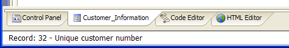

The Window Bar
An optional Window Bar appears at the bottom of the Alpha Anywhere screen.

The Window Bar has a button for each open window, and lets you quickly navigate between windows. Click on any button in the Window Bar to make its corresponding window active. Right-click on any Window Bar button to list options for the window.
Temporarily Hiding the Window Bar
Select View > Window Bar.
Or click View > Settings > System > Preferences > Window Bar and select "No".
Permanently Hiding the Window Bar
Assuming that the Alpha Anywhere system menu is not available to the user.
Select File > Database Properties.
Check Hide Window Bar Toolbar.
Alpha Anywhere also lets you control the Window Bar through Xbasic using the A5_WINDOWBAR_IS_OPEN(), A5_WINDOWBAR_CLOSE(), and A5_WINDOWBAR_SHOW()commands.
You can also right-click on a button in the Window Bar to activate, minimize, maximize, or restore that window. You can also close all open windows, with the exception of the Control Panel.
See Also
Editing System Menus, Setting the Form's Menus